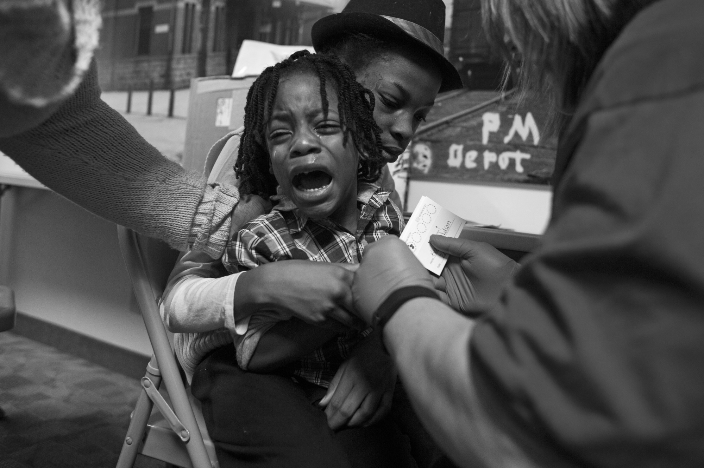
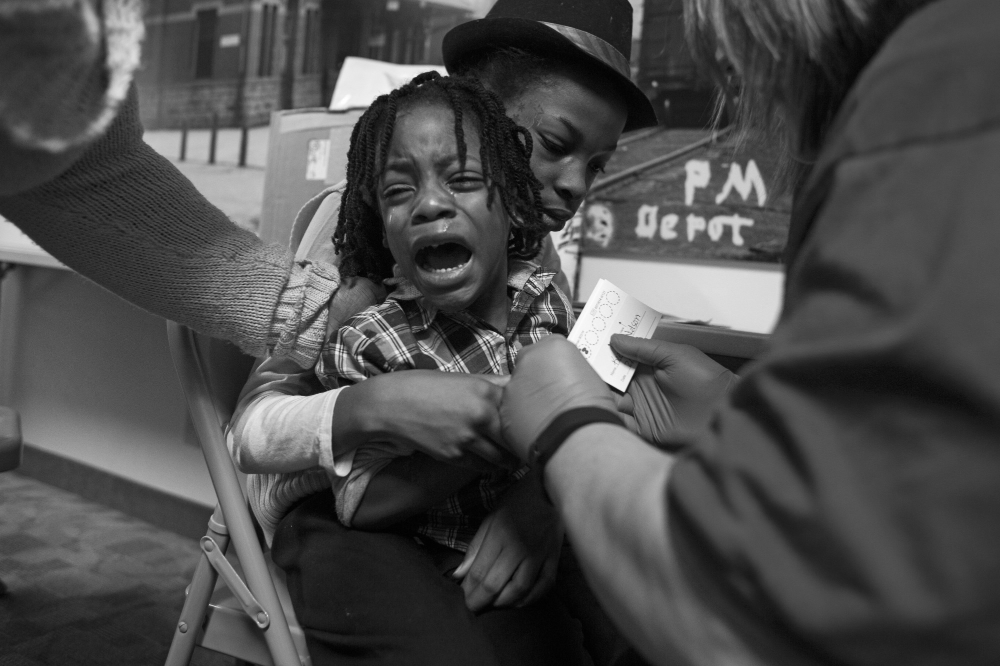
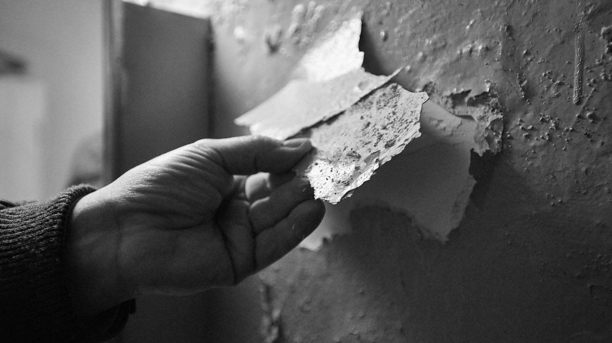
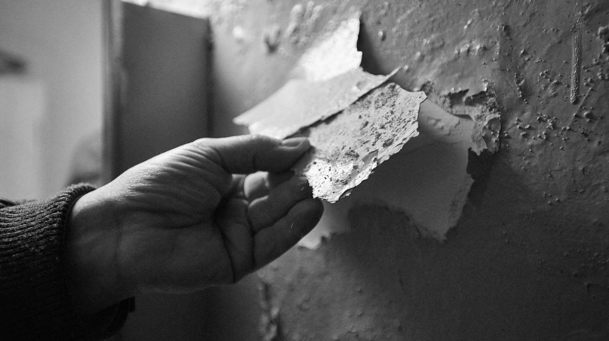

Lead Pollution:
A Failed System
*Ebony is a survivor from lead poisoning.
This is when she successfully underwent heart
transplant surgery in 2020.
Ebony was diagnosed with lead poisoning at the age of 2. Ebony's malady came from eating paint chips from a window sill in the apartment where her family lived in the Saint Louis University campus, as her mother Debbie Thomas-Smith later concluded. Doctors
told Debbie and her father Zachary that Ebony would likely suffer from cognitive impairments for the rest of her life. Even so, she managed to earn a bachelor's degree and dual master's degrees in Business Management and Information Systems
by midlife. Her career with the nation's largest campus bookstore operator spanned nearly 14 years, as she raised two sons, Clayton and Khamari, and parented two nieces, Mykinzi and Mareah, through their teens and into adulthood. She is now
guiding two other teenagers in charting their own career paths.
This is what Ebony Smith-Thomas murmurs when she awakens after a surgery that keeps her heart pumping.
But the fact is, there are many people that are struggling against lead like her, and most of them are not so fortunate to “make it”.
Lead is
an invisible killer.
Lancet Public Health recently published a study that tracked more than 14,000 adults over a 20-year period. In the study, an increase of 37% in mortality from all causes
and 70% increase in mortality from cardiovascular disease was found in people with a blood lead concentration at the 90th percentile, compared to those with a blood lead
concentration at the 10th percentile.
According to the researchers, approximately 412,000 deaths in the US can be attributed to lead contamination per year. It is 10 times higher than figures previously reported
by the Institute for Health Metrics and Evaluation at the University of Washington in Seattle.


All-cause mortality in the United States in 2018 was 725.6 deaths per 100,000 people, including deaths from illness, accidents, and natural causes.
Heart disease, cancer and accident, the top three causes of death, were 161.5, 142.6 and 49.3 deaths per 100,000 people respectively.
According to the study, of all deaths, 125 per 100,000 can be linked to lead explosure, almost as many as heart disease and cancer. (There are overlapping parts with other causes)
The continuing influence
is the scariest thing,
especially for children.
Lead poisoning may cause many symptoms including abdominal pain, constipation, headaches, irritability, memory problems, infertility, and tingling in the hands and feet . In severe cases, anemia, seizures, coma, or death may happen.
The effects of long-term exposure to lead in childhood may cause damage to the brain and nervous system , leading to problems with future development, such as:
Slowed growth and development
Learning and behavioral problems
Hearing and speech problems
This can cause:
Lower IQ
Decreased ability to pay attention
Underperformance in school
We are still
living in danger.
However, despite the ongoing fight against lead, high blood lead rates continue to affect children. An exploration of blood testing data revealed that areas of significant lead exposure risk remain even throughout America’s largest and richest city.
Although lead poisoning has nearly been eliminated in many neighborhoods, the research identified 69 New York City census tracts where at least 10% of young children screened
over an 11-year period, from 2005 to 2015, had elevated levels of lead. That is twice the rate found across Flint, where the Centers for Disease Control and Prevention found
5 percent of children's tests to be high during the peak of the notorious water contamination crisis in 2014 and 2015.
Lead hides in our presents
because of the past.
The largest sources of lead pollution are lead paint and water pipes. Even though lead paint is now banned and water pipes with lead are being replaced, lead poisoning is
not a problem that can be immediately solved. A failed system is non-renewable and continues to affect our life.
Residential lead paint was outlawed in New York in 1960, 18 years before a national ban was enacted. In 2004, a housing law called for the "elimination" of childhood lead poisoning within six years. The city provides free lead testing in housing, promises
to fix hazards and charge landlords when necessary, and has seen childhood exposure rates decline year after year.
However, inspectors did not visit the Brooklyn apartment Barbara Ellis lived in until after her twin daughters tested high for lead three years in a row, she said. Lead paint was found peeling from windows and doors. The girls will need speech and occupational
therapy to recover their developmental delays, common among lead-exposed children.
In November 2017, Mark Peters, the director of Department of Investigation Commissioner released a detailed report that revealed lead paint hazards in 55,000 of 178,000 apartments,
including 4321 homes with children under the age of six.Tests by the NYC bureau of Investigation said that children living in 18 apartments had excessive levels of lead in their bodies, and records from housing
authority show that 202 children living in 133 Housing Authority apartments between 2011 and 2016 had high levels of lead in their blood.
It's not just the lead paint in New York's public housing that are at risk of lead poisoning. When plumbing fixtures that contain lead corrode, lead can enter drinking water, especially when the water has high acidity or low mineral content, which corrodes
pipes and fixtures. The most common origins of lead in drinking water are lead pipes, faucets, and fixtures. Water originating from lead pipes connected to the water main, also known as lead service lines, is typically the main source of lead
in household water. Expserts suspect that the drinking water in New York's public schools may also be tainted with lead. Lead contaminates public school drinking water through corroded lead pipes and fixtures, especially in buildings built
before 1986.
People are keeping
struggling with lead.
A failed system cannot be left alone to continue its bad effects. People try to correct positive feedback loops from the opposite side. The governments and some organizations are looking for solutions to lead poisoning. Their actions range from solving
existing problems — lead cleanup campaigns — to correcting future path — education. Follow the links below to learn about their efforts.
Is eliminating
lead poisoning
the richs' game?
Lead problem, like many other environmental issues, inevitably exposes under the effect of racism and classism.
In 2019, the Interdisciplinary Environmental Clinic at the Washington University School of Law provided a report to the community. Citing figures from 2016, researchers reported that Black children were “ 2.4 times
more likely than white children to test positive for lead in their blood and account for more than 70 percent of children found to suffer from lead poisoning.”
University of Pennsylvania’s researcher Claudia López Lloreda’s report reveals that children living in poverty suffer greater cognitive and physical effects from lead exposure than children from richer families,
even if they live in the same area. Lead poisoning hits low-income children harder than their affluent neighbors.
The best way to eliminate lead poisoning is regular testing. This allows early detection of symptoms of high blood lead and prompt treatment to prevent the subsequent effects. However, lood lead tests are expensive,
usually costing around $30 to $100. This stops some families with low-income from getting their children tested for blood lead. But it is these families that are more likely to have high blood lead levels children because they often
live in old houses, public housing or in districts with serious pollution.
And usually highly educated people have higher consciousness of prevention of lead poisoning. The low class and income families have no awareness and no energy to care for the children's blood lead level, until
their children have shown the corresponding symptoms - usually means that lead has already been very deeply into their bodies - and will suffer in the whole life.
The right thing we should do is to popularize the blood lead testing to every family, and only by reducing the cost of blood lead testing can it be made widely available so that more families in need can get
their children tested. So we call on testing institutions to provide affordable blood lead tests , and we also call on public interest organizations to sponsor the tests. At
the same time, efforts are under way to make blood lead testing fully covered by health insurance. Pennsylvania Insurance Commissioner Teresa Miller said, medical tests for lead exposure must be covered fully by health insurance as a preventative
service for children.
Reference
https://beforefergusonbeyondferguson.org/making-it-ebony-smith-thomas-was-the-victim-of-lead-poisoning-as-a-toddler-now-the-mother-of-two-sons-is-fighting-for-her-life/
https://www.cnn.com/2018/03/12/health/lead-exposure-cardiovascular-disease-study/index.html
https://en.wikipedia.org/wiki/Lead_poisoning
https://www.who.int/news-room/fact-sheets/detail/lead-poisoning-and-health
https://www.reuters.com/investigates/special-report/usa-lead-newyork/
https://www.reuters.com/article/us-usa-lead-new-york-specialreport-idUSKBN1DE1GC
https://www.epa.gov/ground-water-and-drinking-water/basic-information-about-lead-drinking-water
Picture Credits
https://healix.com/reports/lead-poisoning-medical-briefing/
https://pulitzercenter.org/stories/making-it-ebony-smith-thomas-was-victim-lead-poisoning-toddler-now-mother-two-sons-fighting
http://www.blackbottomarchives.com/allaboutdetroit/2016/1/19/the-flint-water-crisis-is-a-result-of-pure-neglect
https://www.usatoday.com/story/life/books/2018/07/20/book-review-poisoned-city-anna-clark-flint-water-crisis-michigan/797604002/
https://www.nbcnews.com/storyline/flint-water-crisis/cdc-confirms-lead-levels-shot-flint-kids-after-water-switch-n598496
https://newrepublic.com/article/147066/flints-water-crisis-damage-kids-brains
https://nypost.com/2019/07/08/nychas-delays-caused-my-lead-poisoned-son-to-get-sicker/
https://www.mercurynews.com/2021/08/03/a-crisis-on-our-hands-san-joses-reid-hillview-airport-exposes-children-to-high-lead-levels-study-finds/
https://sanjosespotlight.com/study-san-jose-children-near-reid-hillview-airport-exposed-to-high-lead-levels/
https://patch.com/california/campbell/san-jose-students-survey-residents-reid-hillview-airport-closure
https://sanfrancisco.cbslocal.com/2021/08/18/reid-hillview-airport-san-jose-lead-levels-closing/
https://www.npr.org/sections/health-shots/2016/06/24/481090373/are-your-pipes-made-of-lead-heres-a-quick-way-to-find-out
Dataset Source
https://data.world/healthdatany/rkyy-fsv9
https://data.world/healthdatany/4n6n-zu56
https://data.world/city-of-ny/tnry-kwh5


 

 
